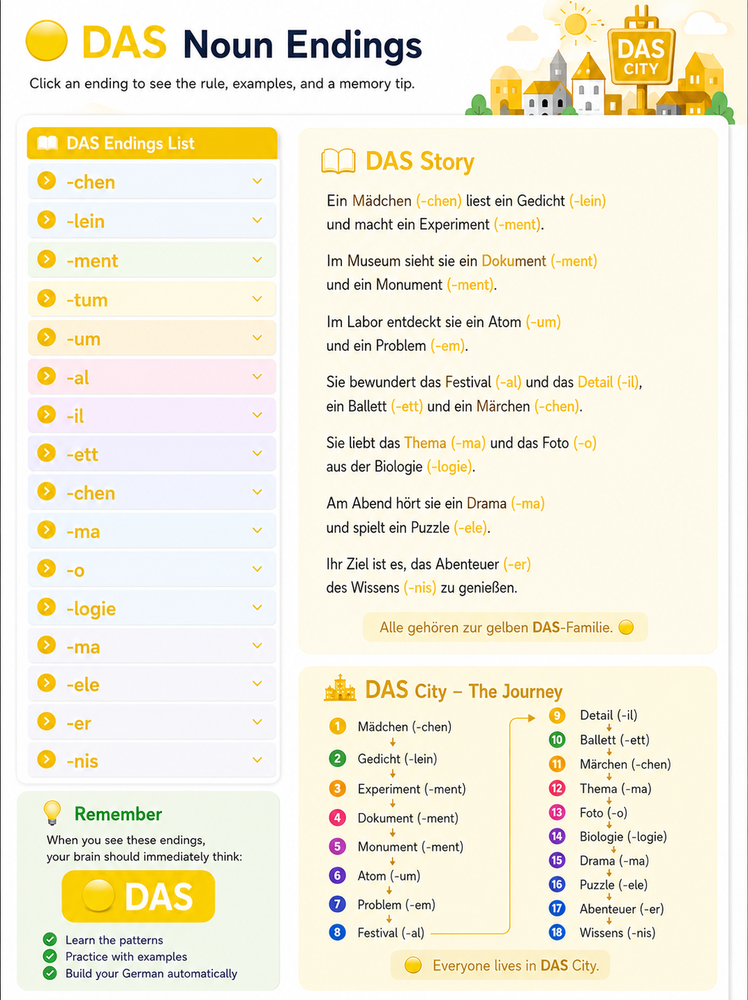
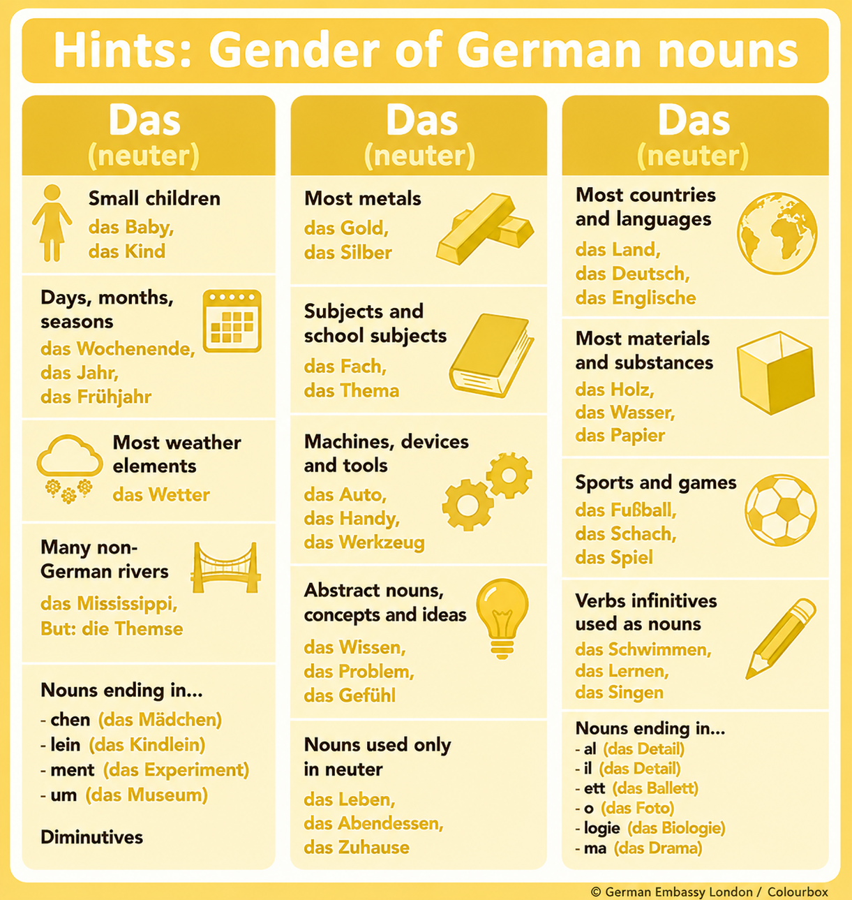

Welcome to DAS City! Neutral nouns live here. Many nouns have special endings that help us predict DAS.
In DAS City lives a kleine Mädchen (-chen). The Mädchen has a Haustier (-tier) and plays with a Instrument (-ment). In the Zentrum (-um) there is a Museum (-um) and an Hotel. The Kind (-kind) learns in a Gymnasium (-um). The Gebäude (-äude) is very modern. All these words belong to the yellow DAS family. 💛


das Mädchen
das Häuschen
das Büchlein
das Fräulein
das Instrument
das Dokument
das Museum
das Zentrum
das Thema
das Klima
das Ergebnis
das Ereignis
das Essen
das Lesen
das Hotel
das Restaurant